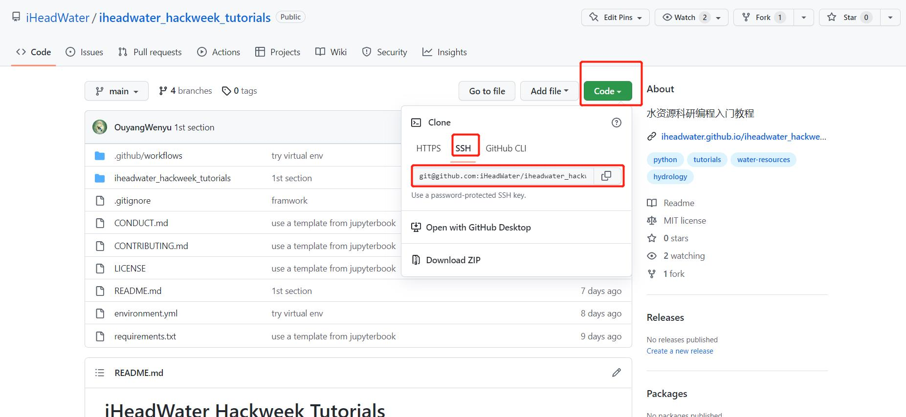

从Github获取文件#
1. 仓库的目录结构#
上述提到，GitHub的资源以仓库（repository）为单位。从本质上讲，仓库是一个特定项目的目录，它之所以被git和GitHub认定为仓库，是因为它包含一个名为 .git 的子目录。
.git 子目录是自动创建的，如果是在 GitHub.com 上创建仓库的，则由 GitHub 创建；如果是在电脑上先创建的仓库，则由 git 创建（即初始化为一个仓库）。 .git 子目录非常重要，所有的版本信息，更新记录，以及git进行仓库管理的相关信息全部保存在这个文件夹中。因此，一定不要修改或删除 .git 子目录中的文件，以免造成数据的丢失。
除了 .git 子目录外，通常还有一些子目录用于工作流程的特定文件，如数据或脚本。大多数仓库中都包含的两个常见文件：
README.md文件 : 它是使用Markdown语言编写的，其作用是对项目的主要信息进行描述（即它的内容、目的等），以便其他人可以快速了解该项目。.gitignore文件 : 它属于文本文件类型，它告诉git要忽略项目中的哪些文件或文件夹。 我们将在本章后面了解更多关于这两个有用的文件。
2. GitHub.com上仓库的URL#
当一个仓库存储在GitHub.com上时，它会被分配一个唯一的URL（即GitHub.com网站上的链接），可以用来找到该仓库并访问其文件。GitHub.com上的仓库可以是公开的，也可以是私有的。
无论哪种情况（公开或私有），GitHub 仓库的 URL 链接总是遵循相同的格式：https://github.com/username/repository-name
用户名是该仓库创建者（即所有者）的用户名。这个用户名可以是个人，比如 eastudent （或者我们 GitHub 用户名），也可以代表一个组织，比如 iheadwater_hackweek_tutorials
例如，在这本教科书中我们使用的资源库归 iheadwater_hackweek_tutorials 所有，因此它的URL看起来像这样：https://github.com/iHeadWater/iheadwater_hackweek_tutorials
3. 在GitHub.com上创建其他用户的文件副本（Fork a Repo）#
使用GitHub.com，我们可以复制一个由其他用户或组织创建的GitHub仓库,这项任务被称为fork仓库。其他用户也可以fork你的仓库，而原始仓库不会被修改。
被fork的仓库是与原始仓库是相连的。这意味着当fork的原始仓库发生更新时，我们可以同步更新到我们的fork仓库。当然，我们也可以对原始版本库提出修改建议，并由该版本库的所有者审核。因此，fork允许我们与他人协作，同时保护文件的原始版本。协作时，每个人都会用原始文件的副本工作，而且所有的修改都会在每个文件的历史中被跟踪，并可以在任何时候撤销。
可以从想复制的仓库的GitHub.com主页面fork一个现有的GitHub仓库。
fork仓库:
导航到我们想复制的版本库页面 - 例如。
https://github.com/iHeadWater/iheadwater_hackweek_tutorials在仓库页面上，我们会看到右上角有一个按钮，上面写着Fork。该按钮旁边的数字告诉我们该 repo 已经被fork了多少次。
点击 “fork”按钮，当它询问我们想在哪里fork该版本时，选择你的用户账户。
一旦fork了该 repo，我们的账户中就会有一个副本。导航到我们的 repo 页面。网址应该是这样的：
https://github.com/your-user-name/iheadwater_hackweek_tutorials
要fork一个repo，首先导航到想fork的repo。然后点击屏幕右上角的fork按钮。然后就可以在我们的账户中创建一个该 repo 的副本。

在这本教科书的后面，我们将学习如何对原始版本库提出修改建议，从原始版本库接收更新到我们的fork版本，并与他人合作。
4. 从GitHub.com复制文件到我们的电脑（git clone）#
在本地使用 GitHub 仓库（包括fork仓库），需要在电脑上创建该仓库的本地副本（这项任务被称为克隆仓库）。可以克隆自己的 GitHub 仓库，也可以克隆别人的仓库（比如我们fork到自己的 GitHub 账户的仓库）。
无论哪种情况，克隆都可以创建一个 GitHub 仓库的本地副本，这样就可以在本地电脑上处理文件了。克隆仓库是在本地处理文件的好方法，因为同时在云端的 GitHub.com 上还有一份文件副本。按照下面的步骤，我们将在终端使用 git clone 命令来克隆 GitHub 仓库。
4.1 使用Bash改变工作目录#
使用任何 git 命令的第一步是将当前工作目录切换到接下来想要进行操作的目录。就 git clone 而，当前工作目录就是我们想下载 GitHub 仓库的本地副本的地方。
在这本教科书中，我们将克隆一个 repo 到你的电脑（或你工作的地方）上一个叫做 iheadwater_hackweek_tutorials的目录。这个 iheadwater_hackweek_tutorials 目录此时应该位于我们电脑的主目录中。
4.2 从GitHub.com复制一个Github.com仓库的URL#
要运行 git clone 命令，我们需要先获取仓库的 URL（即拥有的仓库或从其他用户的仓库创建的fork）。
git clone with HTTPS是官方推荐的，它不用配置ssh钥匙就可以完成。以一个仓库为例，在该仓库的GitHub.com主页上，我们可以点击Clone or download的绿色按钮，然后复制提供的URL，看起来就像是
https://github.com/iHeadWater/iheadwater_hackweek_tutorials.git

也可以根据SSH钥匙，来复制仓库（可将SSH钥匙理解成远程连接本地电脑的一把钥匙）。在 Clone with HTTPS那里，点击 Use SSH ，就会切换成根据SSH钥匙来复制仓库，此时就可以复制提供的URL，看起来就像是
git@github.com:iHeadWater/iheadwater_hackweek_tutorials.git

4.3 在终端运行 Git 克隆命令#
现在有了想复制到本地版本库的URL，可以用终端运行git clone命令，后面跟上复制的URL或者SSH:
git clone https://github.com/iHeadWater/iheadwater_hackweek_tutorials.git、
git clone git@github.com:iHeadWater/iheadwater_hackweek_tutorials.git
注： SSH密钥是需要配置的，没有配置是不能用的，下一节会讲如何配置
现在已经在 iheadwater_hackweek_tutorials 目录下做了一个版本库的本地拷贝。可以用终端的ls命令仔细检查这个目录是否存在。